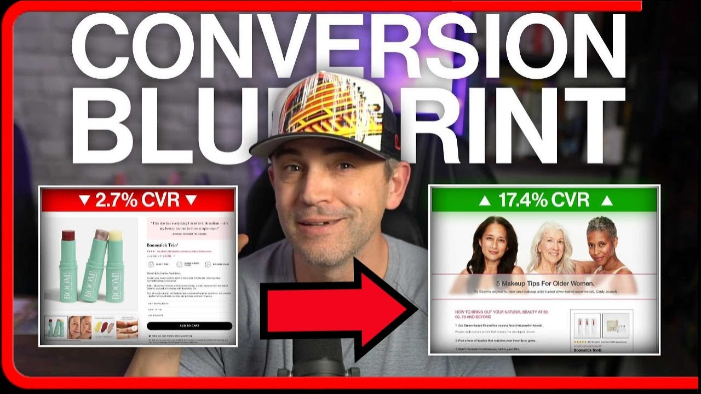
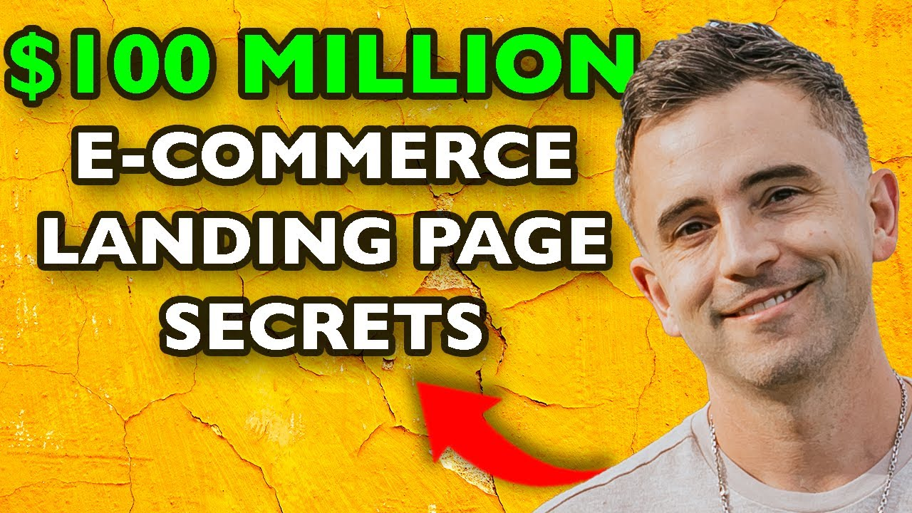
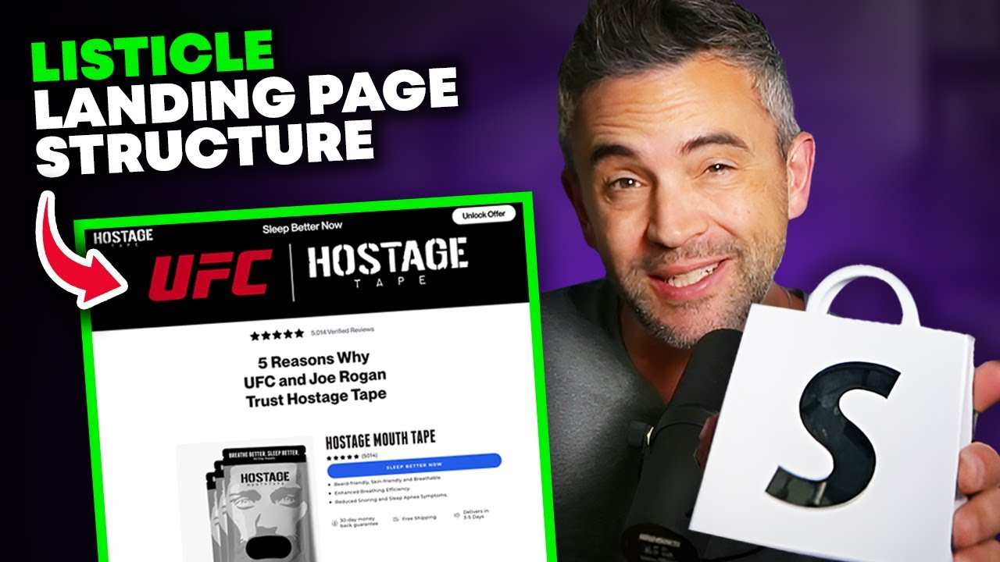

The Landing Page Blueprint.
Every part of an ecommerce landing page, what it actually does, and the different flavors you'll see in the wild , from the navigation bar all the way down to the "are you really sure you want to leave?" popup.

certified ✓
Read the bold stuff.
Section titles + the one-line summary under each element. You'll absorb 80% of the doc in 4 minutes.
Click "expand" on anything.
Each card opens to reveal the long answer + every subtype I track when auditing competitor pages.
Audit your own page.
Open your live landing page in another tab. Walk through the 6 sections. Mark anything that's absent.
What's inside
Above the Fold.
The first screen. The 5-second test. If you blow it here, it doesn't matter how good your offer is , they're already gone.
Education & Persuasion.
The middle of the page where you stop selling and start convincing. Problem first. Then bridge. Then mechanism.
Product Reveal & Features.
Lights down. Curtain up. This is where you finally introduce the thing , and prove it does what you said it would.
Social Proof.
Other people's words do the heavy lifting your copy can't. Real names, real faces, real numbers , the whole point is to make you sound less like a brand.
Conversion & Offer.
The money part. Stack the value, stage the price, kill the risk, light a fuse. In that order.
Closing & Trust.
The bottom-of-page scanner. They've made up their mind to keep scrolling , your job here is to give them a second chance to convert and a first chance to feel safe doing it.
Want to go deeper?
Three videos I'd watch in order before your next landing page sprint. They go a lot further than this doc , I'll be honest, the doc is the menu, these are the meal.

The Ecommerce Listicle Landing Page Blueprint: Proven Conversion System

$100m Converting Landing Page Structure: Beginners Guide, Step-by-Step Tutorial (with Examples)

Copy Hostage Tape's 9-Figure Shopify Landing Page Design: Step-By-Step Tutorial
Questions? Find me here.
I respond fastest on X. LinkedIn for "boring serious business stuff." YouTube for everything else.